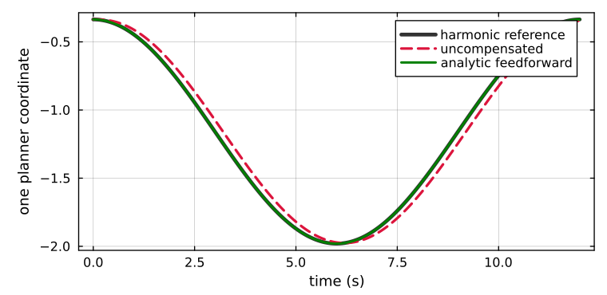
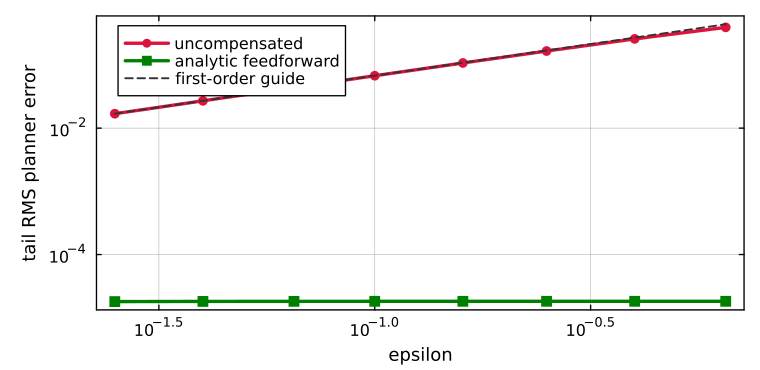

Analytic Feedforward
Making $\epsilon$ smaller reduces lag but also demands faster reference delivery. When the target planner is differentiable, the better solution is to cancel the known forcing term instead of attempting to outrun it.
Cancellation law
Drive the normalized planner with
\[u_{\mathrm{ff}}(t)=q^\star(t)+\epsilon\dot q^\star(t),\]
so that
\[\epsilon\dot x=-x+u_{\mathrm{ff}}.\]
For $e=x-q^\star$, substitution gives
\[\epsilon\dot e =-x+q^\star+\epsilon\dot q^\star-\epsilon\dot q^\star =-e.\]
The moving-reference input disappears exactly. The correction changes the input to the dynamic realization; it does not modify $H$, the target boundary values, or the desired harmonic manifold.

The dashed red response reaches each turning point after the black reference. The green feedforward response lies on top of the black curve at this scale.
For a fixed linear harmonic system,
\[\dot q^\star=H^{-1}(-B\dot p).\]
The existing clique-tree factor can therefore solve target position and target velocity right-hand sides. In a differentiable conic planner, implicit KKT sensitivity supplies the same quantity.
Measured first-order lag
The running scenario sweeps $\epsilon$ from $0.025$ to $0.65$ over three matched target periods. The uncompensated tail RMS follows a log-log slope of $0.972$, while feedforward remains near the sampling/interpolation floor.

| epsilon | uncompensated RMS | feedforward RMS |
|---|---|---|
| 0.025 | 1.69e-2 | 1.80e-5 |
| 0.100 | 6.75e-2 | 1.82e-5 |
| 0.250 | 1.66e-1 | 1.82e-5 |
| 0.650 | 3.93e-1 | 1.82e-5 |
The residual is not claimed to be a physical noise floor. It comes from first-order interpolation of a smooth periodic reference sampled every $0.02$ seconds. For an affine reference, the implementation cancels lag to machine precision.
Derivative uncertainty
If the available derivative is $\widehat{\dot q^\star}=\dot q^\star+n(t)$, then
\[\epsilon\dot e=-e+\epsilon n(t).\]
The feedforward error is therefore ISS with gain $\epsilon$ from derivative error. Feedforward does not become unstable when velocity estimates are imperfect; it trades deterministic lag for sensitivity to their quality.
The exact-derivative experiment is therefore the best-case result. In a deployment, derivative-estimation error should be reported separately and checked against the $\epsilon$ gain above.
Feedforward is optional, not free
Use it when target velocity or KKT sensitivity is trustworthy and timestamped consistently with the position reference. Without that information, the uncompensated filter remains stable and its error is bounded by the ISS result. Finite differencing a noisy target signal without filtering can be worse than accepting the known $O(\epsilon)$ lag.
For an agent: feedforward changes where your reference is delivered, not how your actuator is controlled. The local tracking law does not change.